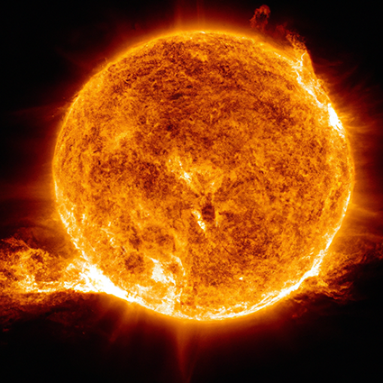
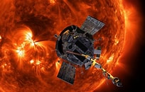

The Sun is about 4.5 billion years old and is classified as a yellow dwarf star.
It’s approximately 100 times wider than Earth and about 10 times wider than Jupiter. The Sun is about 93 million miles (150 million kilometers) away from Earth. The Sun is composed of several layers, including the core, radiative zone, convective zone, photosphere, chromosphere, and corona. The core is where nuclear fusion occurs, producing the Sun’s energy. It rotates at different speeds at different latitudes. At the equator, it completes one rotation in about 25 Earth days, while at the poles, it takes about 36 Earth days.
The Sun’s core temperature is around 15 million degrees Celsius (27 million degrees Fahrenheit), hot enough to sustain nuclear fusion. This fusion process releases an enormous amount of energy, which we receive as light and heat. The Sun exhibits various phenomena such as solar flares, prominences, and coronal mass ejections, which can affect space weather and even impact Earth.
The Closest Satellite

The Parker Solar Probe holds the record for the closest approach to the Sun by a human-made object.
Launched by NASA in August 2018, it has made several close passes through the Sun’s outer atmosphere, known as the corona. The probe has approached within 6.9 million kilometers (4.3 million miles) of the Sun’s surface.
To know more about the Sun, click the link below:
SUN.com